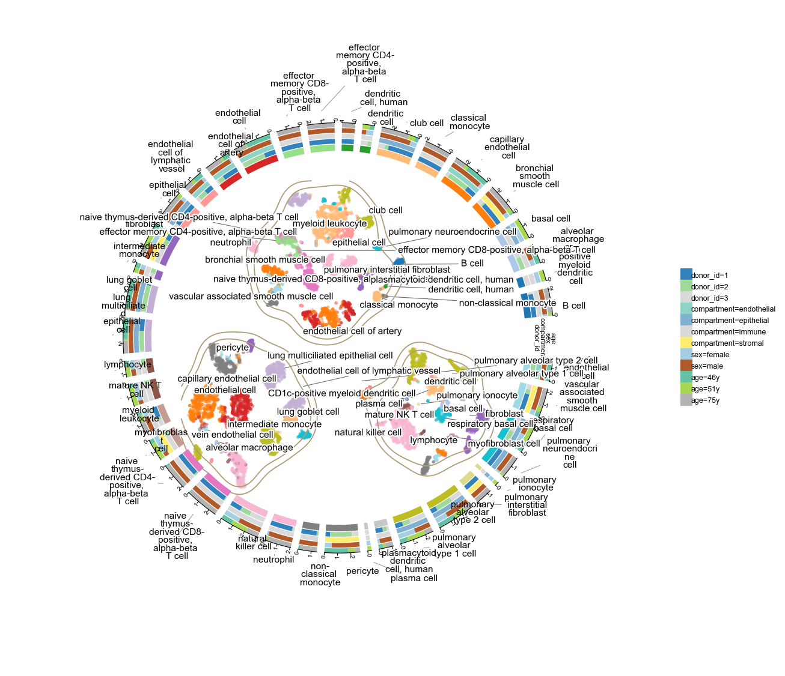
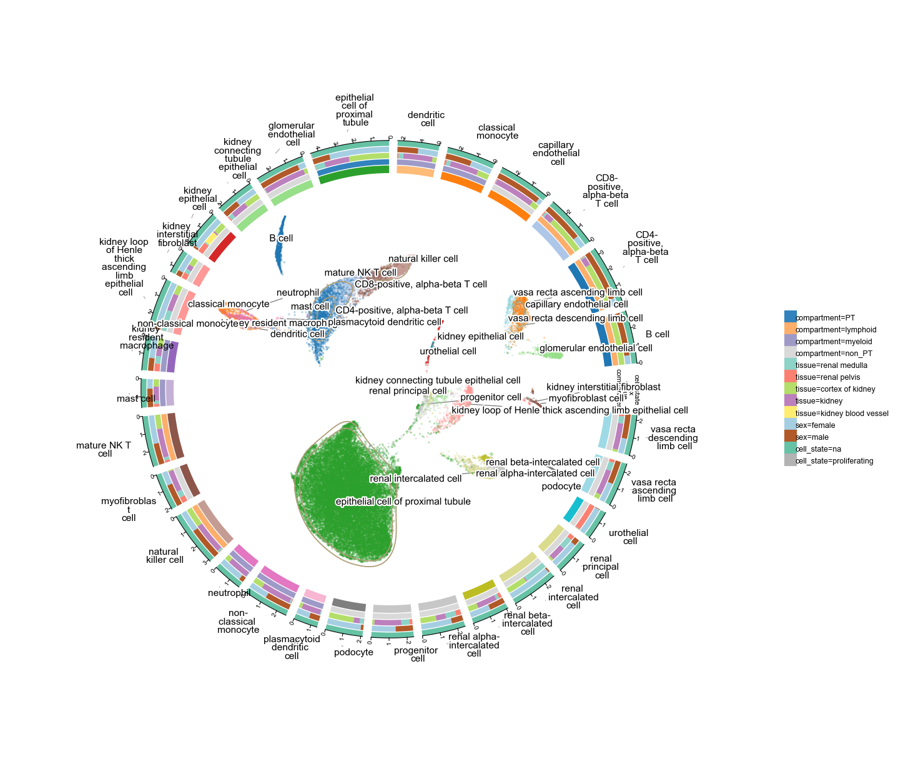
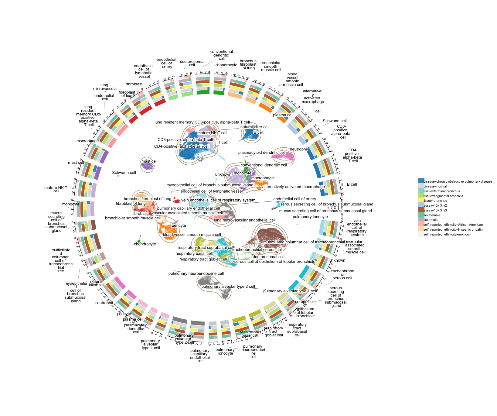
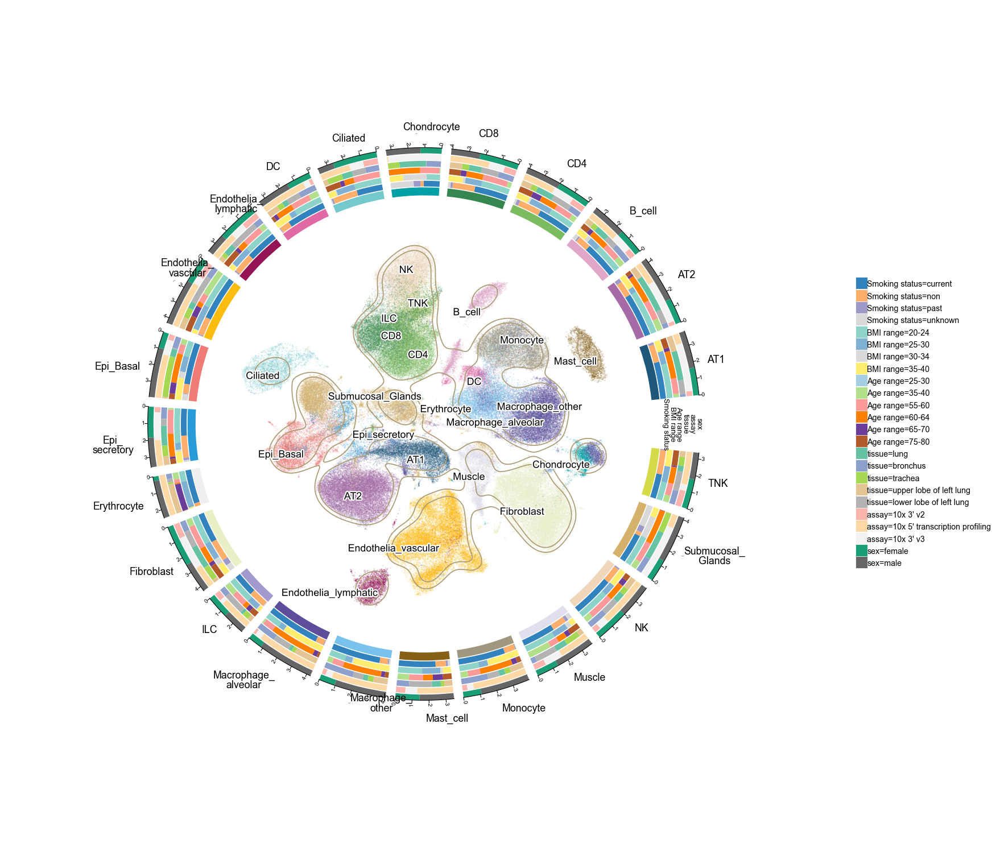

Visualization
Circular UMAP with plot1cell
Python port of the R package plot1cell's plot_circlize (Wu 2021). Clusters become arc sectors on the unit circle (sector length ∝ log10(n_cells)); the UMAP / t-SNE scatter and KDE contour live *inside* the circle; any list of adata.obs columns you pass to tracks= becomes outer concentric rings.
This notebook walks through four real scales — all pulled straight from CELLxGENE Discover:
| Scale | Dataset | Cell types | Tracks shown |
|---|---|---|---|
| 10k | Krasnow Lung Cell Atlas (Smart-seq2) | 40 | donor · compartment · sex · age |
| 50k | Mature kidney | 29 | compartment · tissue · sex · cell_state |
| 100k | Human distal airways (healthy + COPD) | 44 | disease · tissue · assay · sex · ethnicity |
| 200k | Lung full cell & nuclei atlas | 23 | smoking · BMI · age · tissue · assay · sex |
Note: above ~10 clusters the function's label_orient='auto' switches from tangent to radial labels so even 40- to 60-type rings stay readable. With 3-6 tracks you can see plot1cell's composition-within-sector behaviour on many variables at once.
Setup
All four datasets are available as public .h5ad files from the CELLxGENE CDN. We cache each under data/ on first run.
import omicverse as ov
ov.style(font_path='arial')
%load_ext autoreload
%autoreload 2import os
CDN = 'https://datasets.cellxgene.cziscience.com/'
DATA = {
'lung10k': 'c88e0403-da93-40f4-99b5-f5fdeb81a82c.h5ad', # Krasnow Smart-seq2
'kidney50k': '7dafa492-6129-4dff-a794-17bdefde3575.h5ad', # Mature kidney full
'airway100k':'861b6b12-f9c9-4434-8d09-695a5156ce23.h5ad', # distal airways
'lung200k': '769fff4f-099a-46e1-917b-06ce1fee858a.h5ad', # all cells and nuclei
}
os.makedirs('data', exist_ok=True)
def fetch(key):
local = f'{key}.h5ad'
if not os.path.exists(local):
print(f'downloading {key}...')
ov.datasets.download_data(CDN + DATA[key], local)
return local
Scale 1 — 10 k cells (Krasnow Lung Cell Atlas, Smart-seq2)
9 409 cells × 40 cell types. This dataset only carries a t-SNE (no UMAP) — ov.pl.plot1cell accepts any 2-D embedding via basis=, so we plot against X_tSNE directly. Four tracks: donor (3), compartment (4 — immune / epithelial / endothelial / stromal), sex (2), age (3).
a10k = ov.read('data/'+fetch('lung10k'))
# Shorten the long development_stage strings for the legend
a10k.obs['age'] = a10k.obs['development_stage'].astype(str).str.replace('-year-old stage', 'y', regex=False)
a10kov.pl.plot1cell(
a10k, clusters='cell_type', basis='X_tSNE',
tracks=['donor_id', 'compartment', 'sex', 'age'],
point_size=6, point_alpha=0.5,
figsize=(9, 9), label_fontsize=7,
)
Scale 2 — 50 k cells (Mature kidney)
40 268 cells × 29 cell types spanning 5 kidney sub-tissues, 12 donors, mixed pediatric / adult / tumour samples. Four tracks: compartment (proximal tubule / non-PT / lymphoid / myeloid), tissue (cortex / medulla / …), sex, and the cell_state (proliferating flag).
a50k = ov.read('data/'+fetch('kidney50k'))
a50kov.pl.plot1cell(
a50k, clusters='cell_type', basis='X_umap',
tracks=['compartment', 'tissue', 'sex', 'cell_state'],
point_size=2, point_alpha=0.35,
figsize=(10, 10), label_fontsize=7,
)
Scale 3 — 100 k cells (distal airways, healthy + COPD)
115 788 cells × 44 cell types across 17 donors and two disease states (normal vs. COPD). Five tracks: disease, tissue (distal / terminal / proximal airway), assay, sex, self_reported_ethnicity.
At this scale the scatter is dense — we dial point size + alpha down so the KDE contour still reads through. Labels are all radial so the 44 cell types don't collide.
a100k = ov.read('data/'+fetch('airway100k'))
a100kov.pl.plot1cell(
a100k, clusters='cell_type', basis='X_umap',
tracks=['disease', 'tissue', 'assay', 'sex',
'self_reported_ethnicity'],
point_size=1, point_alpha=0.25,
figsize=(11, 11), label_fontsize=6,
)
Scale 4 — 200 k cells (Lung all cells and nuclei)
193 108 cells × 60 fine cell types — we use the curator's mid-level collapse Celltypes_master_higher_immune (23 types) to keep the ring readable. Six tracks: smoking status, BMI range, age range, tissue sub-region, assay, sex.
The full file is ~2 GB. If RAM is tight, you can subsample: adata = adata[np.random.choice(adata.n_obs, 50_000, replace=False)]. The KDE contour is still smooth at 50k sampled points.
a200k = ov.read('data/'+fetch('lung200k'))
# Keep fewer genes to reduce memory — plot1cell only needs obsm + obs
a200k = a200k[:, :200].copy()
a200kov.pl.plot1cell(
a200k, clusters='Celltypes_master_higher_immune',
basis='X_umap_Harmony_scDonor_snBatch',
tracks=['Smoking status', 'BMI range', 'Age range',
'tissue', 'assay', 'sex'],
point_size=0.8, point_alpha=0.2,
figsize=(12, 12), label_fontsize=8,
)
Key parameters
| Parameter | Purpose | ||
|---|---|---|---|
clusters | obs column with the cluster label (required). | ||
basis | obsm key, default 'X_umap'. Any 2-D embedding works (X_tSNE, X_pca, harmony UMAPs, …). | ||
tracks | list of obs columns → one concentric ring each, coloured by the run-length composition within each cluster sector. No hard limit; 6 rings render fine. | ||
coord_scale | how much of the unit circle the scatter fills (0–1, default 0.8). | ||
contour_levels | KDE levels to overlay; None disables. | ||
label_orient | 'auto' (default) \ | 'tangent' \ | 'radial'. Auto uses tangent for ≤10 clusters (classic R look) and radial above that so labels never overlap. |
gap_between_deg, gap_start_deg | angular gaps between sectors (2°) and at the start of the circle (12°) — match the R convention. | ||
cluster_palette, track_palette | override the default ov palette. Accepts a colormap name or a list of colors. | ||
bg_color | canvas colour (default the R parchment '#F9F2E4'). Use 'white' for a plain look. | ||
point_size, point_alpha | for dense scatters (> 50k points) drop both to keep the KDE contour visible through the cloud. | ||
return_data=True | also return the per-cell dataframe used internally. |